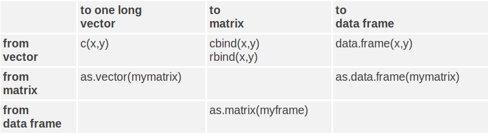
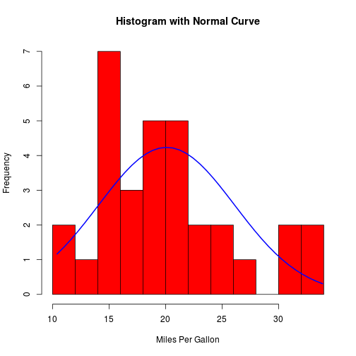
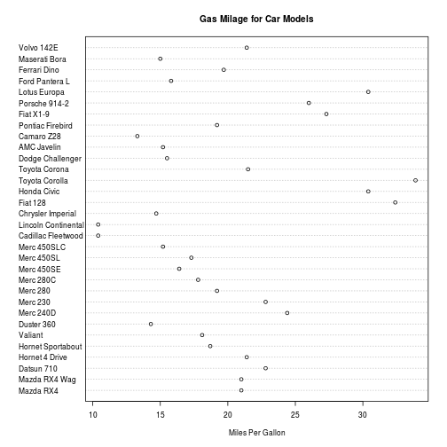
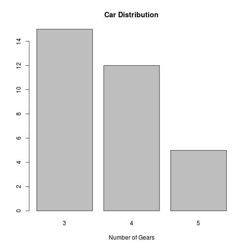
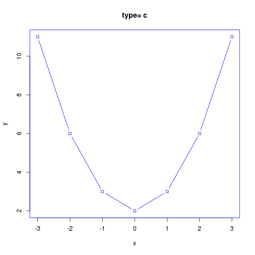
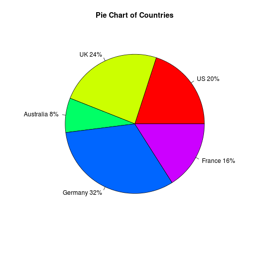
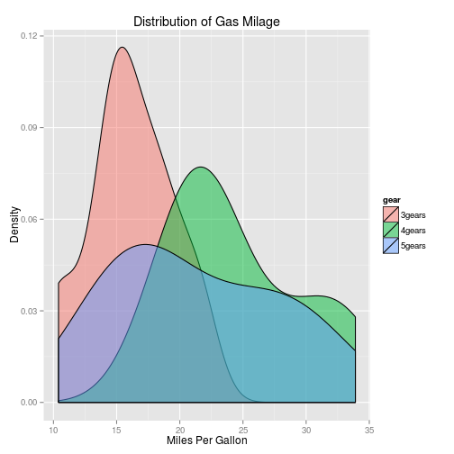
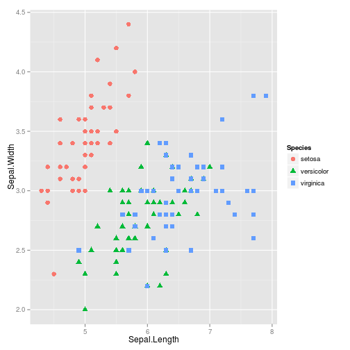
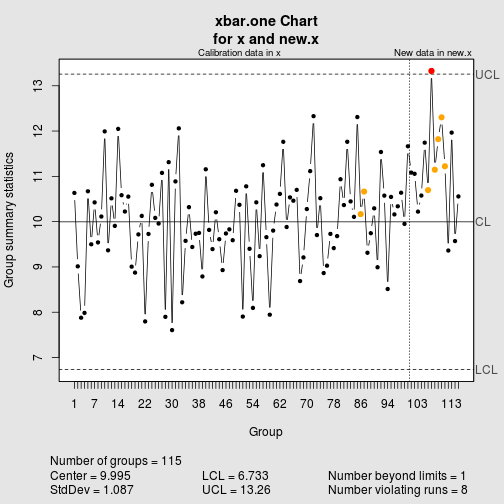
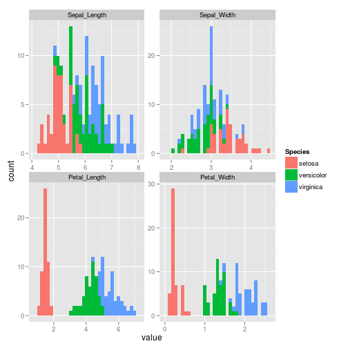

Intro to R
A brief introduction to R statistical environment
Created by Ankit Sharma / Digg Data
Basic operations
Addition, Subtraction, Multiplication, Division, Remainder
1 + 3
## [1] 4
4 * 2 - 5
## [1] 3
42/23 + 43
## [1] 44.83
Creating a vector
c(3, 2, 5, 1, 3, 5, 8, 9, 6, 3, 2)
## [1] 3 2 5 1 3 5 8 9 6 3 2
3:45
## [1] 3 4 5 6 7 8 9 10 11 12 13 14 15 16 17 18 19 20 21 22 23 24 25
## [24] 26 27 28 29 30 31 32 33 34 35 36 37 38 39 40 41 42 43 44 45
Arithmatic operations on vectors
c(1, 2, 3, 4) * c(10, 20, 30, 40)
## [1] 10 40 90 160
if two vectors are not of equal lengths
c(1, 2, 3, 4, 5) * c(10, 20, 30, 40)
## Warning: longer object length is not a multiple of shorter object length
## [1] 10 40 90 160 50
You can create a character vector as well
Note: You can using assignment operator '<-' to assign this vector to a variable name "mydata"
mydata <- c("Hello world", "Data Science Practices", "Bangalore")
print(mydata)
## [1] "Hello world" "Data Science Practices"
## [3] "Bangalore"
mydata
## [1] "Hello world" "Data Science Practices"
## [3] "Bangalore"
Navigation within R environment
- Listing all files
ls()
- Examining a variable
str() # Compactly display the internal structure of an R object
summary() # Displays summary of the data like mean, median, 1st and 3rd quantile, number of NA(missing values)
head() # Displays first 6 rows of the data
tail() # Displays last 6 rows of the data
class() # Displays class of object - character, integer, numeric, factor, logical
describe() # part of HMisc package, basically a mixture of str() and summary()
- Removing variables from environment
rm()
rm(list = ls()) # Removes everything
Data Structures in R
Vectors:
- Numeric
- Character
- Logical
- Factors
Objects:
- Arrays & Matrices
- Lists
- Data Frames
Data type conversion
Vectors
x <- c(0, 2:4)
class(x)
## [1] "numeric"
y <- c("alpha", "beta", "gamma", "32", "r2")
class(y)
## [1] "character"
z <- as.logical(c(1, 0, TRUE, F, 1, T, FALSE))
class(z)
## [1] "logical"
f <- as.ordered(factor(c("Good", "Normal", "Bad", "Good", "Bad", "Good", "Normal"),
levels = c("Bad", "Normal", "Good")))
class(f)
## [1] "ordered" "factor"
str(f)
## Ord.factor w/ 3 levels "Bad"<"Normal"<..: 3 2 1 3 1 3 2
- Arrays
myarray <- array(c(1, 2, 3, 4, 5, 6, 7, 8, 9, 10, 11, 12), dim = c(3, 4))
print(myarray)
## [,1] [,2] [,3] [,4]
## [1,] 1 4 7 10
## [2,] 2 5 8 11
## [3,] 3 6 9 12
referencing a call
myarray[2, 3]
## [1] 8
To get all rows (or columns) from a dimension, simply omit the indices. The following code is for showing all columns of 2nd row
myarray[2, ]
## [1] 2 5 8 11
- Matrices
Well, matrix is nothing but a 2-dimensional array
matrix(data = c(1, 2, 3, 4, 5, 6, 7, 8, 9, 10, 11, 12), nrow = 3, ncol = 4)
## [,1] [,2] [,3] [,4]
## [1,] 1 4 7 10
## [2,] 2 5 8 11
## [3,] 3 6 9 12
data <- c(1, 2, 3, 4, 5, 6, 7, 8, 9, 10, 11, 12)
matrix(data, ncol = 3, byrow = F) # Filling Column-wise
## [,1] [,2] [,3]
## [1,] 1 5 9
## [2,] 2 6 10
## [3,] 3 7 11
## [4,] 4 8 12
matrix(data, ncol = 3, byrow = T) # Filling Row-wise
## [,1] [,2] [,3]
## [1,] 1 2 3
## [2,] 4 5 6
## [3,] 7 8 9
## [4,] 10 11 12
- Lists
In R, it is possible to construct more complicated structures with multiple data types. R has a built-in data type for mixing objects of different types, called lists.
ndata = c(2, 3, 5)
sdata = c("aa", "bb", "cc", "dd", "ee")
ldata = c(TRUE, FALSE, TRUE, FALSE, FALSE)
mydata = list(ndata, sdata, ldata, 3) # x contains copies of n, s, b
Referencing list
mydata[2]
## [[1]]
## [1] "aa" "bb" "cc" "dd" "ee"
mydata[c(1, 3)]
## [[1]]
## [1] 2 3 5
##
## [[2]]
## [1] TRUE FALSE TRUE FALSE FALSE
mydata[[1]][3] # Member referencing
## [1] 5
- Data Frames
A data frame is used for storing data tables. It is a list of vectors of equal length. For example, the following variable df is a data frame containing three vectors a, b, c.
a <- c(2, 3, 5)
b <- c("aa", "bb", "cc")
c <- c(TRUE, FALSE, TRUE)
df <- data.frame(a, b, c)
df
## a b c
## 1 2 aa TRUE
## 2 3 bb FALSE
## 3 5 cc TRUE
Built-in data frame like iris, mcars, Insurance, etc.
class(iris)
## [1] "data.frame"
str(iris)
## 'data.frame': 150 obs. of 5 variables:
## $ Sepal.Length: num 5.1 4.9 4.7 4.6 5 5.4 4.6 5 4.4 4.9 ...
## $ Sepal.Width : num 3.5 3 3.2 3.1 3.6 3.9 3.4 3.4 2.9 3.1 ...
## $ Petal.Length: num 1.4 1.4 1.3 1.5 1.4 1.7 1.4 1.5 1.4 1.5 ...
## $ Petal.Width : num 0.2 0.2 0.2 0.2 0.2 0.4 0.3 0.2 0.2 0.1 ...
## $ Species : Factor w/ 3 levels "setosa","versicolor",..: 1 1 1 1 1 1 1 1 1 1 ...
Data type conversion
Use is.foo to test for data type foo. Returns TRUE/FALSE
Use as.foo to explicitly convert it.
- is.numeric(), is.character(), is.vector(), is.matrix(), is.data.frame()
- as.numeric(), as.character(), as.vector(), as.matrix(), as.data.frame)

Working with Data Frames
- Manipulation
- Indexing
- Transform data
Manipulation
Delecting a column
data(iris)
dim(iris)
## [1] 150 5
iris$Sepal.Width <- NULL # or try iris[,2] <- NULL
dim(iris)
## [1] 150 4
Delecting a row
data(iris)
dim(iris)
## [1] 150 4
iris <- iris[-c(5:10), ] # Removing the 5th-10th rows, total 6 rows
dim(iris)
## [1] 144 4
Indexing
- array of integer indices
- array of character names
- array of logical booleans
mydata <- list(bangalore = c(2, 3, 1, 4, 2), indore = c(7, 2, 4, 9, 8), noida = c(5,
2, 6, 8, 6))
mydata <- as.data.frame(mydata)
mydata[2:4, 1:2] # integer indices
## bangalore indore
## 2 3 2
## 3 1 4
## 4 4 9
mydata[, "indore"] # character indices
## [1] 7 2 4 9 8
mydata[mydata$bangalore > 2, ] # boolean logic
## bangalore indore noida
## 2 3 2 2
## 4 4 9 8
Transform data
Subset
newdata <- subset(iris, Species == "setosa")
summary(newdata)
## Sepal.Length Petal.Length Petal.Width Species
## Min. :4.30 Min. :1.00 Min. :0.100 setosa :44
## 1st Qu.:4.80 1st Qu.:1.38 1st Qu.:0.200 versicolor: 0
## Median :5.00 Median :1.50 Median :0.200 virginica : 0
## Mean :5.02 Mean :1.46 Mean :0.248
## 3rd Qu.:5.20 3rd Qu.:1.60 3rd Qu.:0.300
## Max. :5.80 Max. :1.90 Max. :0.600
Transform data (cond...)
Transform
newdata <- transform(iris, ratio = Petal.Width/Petal.Length, Sepal.Length = NULL)
summary(newdata)
## Petal.Length Petal.Width Species ratio
## Min. :1.00 Min. :0.100 setosa :44 Min. :0.0667
## 1st Qu.:1.60 1st Qu.:0.375 versicolor:50 1st Qu.:0.2308
## Median :4.40 Median :1.350 virginica :50 Median :0.3061
## Mean :3.85 Mean :1.240 Mean :0.2872
## 3rd Qu.:5.10 3rd Qu.:1.800 3rd Qu.:0.3586
## Max. :6.90 Max. :2.500 Max. :0.4706
Transform data (cond...)
Sample
mysample <- iris[sample(1:nrow(iris), 50, replace = FALSE), ]
summary(mysample)
## Sepal.Length Petal.Length Petal.Width Species
## Min. :4.40 Min. :1.00 Min. :0.100 setosa :14
## 1st Qu.:5.10 1st Qu.:1.62 1st Qu.:0.375 versicolor:18
## Median :5.95 Median :4.50 Median :1.350 virginica :18
## Mean :5.89 Mean :3.89 Mean :1.240
## 3rd Qu.:6.47 3rd Qu.:5.20 3rd Qu.:1.800
## Max. :7.90 Max. :6.70 Max. :2.300
Control structures & Functions
R has the following control structures:
- if-else
- for
- while
- switch
- ifelse
Functions
R has lot of Build-in functions like mean(), tolower(), dnorm(), na.rm(), is.na(), t() for various analysis.
The general structure for any user-defined function in R is:
myfunction <- function(arg1, arg2, ...) {
statements
return(object)
}
Example
Transpose of a matrix
mytrans <- function(x) {
if (!is.matrix(x)) {
warning("argument is not a matrix: returning NA")
return(NA_real_)
}
y <- matrix(1, nrow = ncol(x), ncol = nrow(x))
for (i in 1:nrow(x)) {
for (j in 1:ncol(x)) {
y[j, i] <- x[i, j]
}
}
return(y)
}
# try it
z <- matrix(1:10, nrow = 5, ncol = 2)
tz <- mytrans(z)
tz
## [,1] [,2] [,3] [,4] [,5]
## [1,] 1 2 3 4 5
## [2,] 6 7 8 9 10
Working with data files
- Getting data into R
- Getting data out of R
Getting data into R
- From data files (csv, tsv, txt, ...) Also look at read.delim, read.table functions
mydata <- read.csv("/file path/file_name.csv", header = TRUE)
- From databases packages require sqldf, RSQLite, RSQLite.extfuns, gsubfn, DBI, chron
connection <- dbConnect(driver, user, pass, host, dbname)
mydata <- dbSendQuery(connection, "SELECT * FROM table_name")
- From Web
connection <- url("http://www.example.com/datafile/data.txt")
mydata <- read.csv(connection, header = TRUE)
- From RData files
mydata <- data("Data_File_Name.Rdata")
Getting data out of R
- To data files (csv, tsv, txt, ...)
write.csv("/file path/file_name.csv", header = TRUE, row.names = NULL)
- To databases
connection <- dbConnect(driver, user, pass, host, dbname)
dbWriteTable(connection, "table_name", data_name)
- To RData file
save(mydata, file = "mydata.RData")
Data Processing
- Loading data into R
- Analyzing data
- Writing it out on a csv and RData file
Loading data into R
data(iris)
dim(iris)
## [1] 144 4
head(iris) #You can also do tails(iris) to get last 6 rows
## Sepal.Length Petal.Length Petal.Width Species
## 1 5.1 1.4 0.2 setosa
## 2 4.9 1.4 0.2 setosa
## 3 4.7 1.3 0.2 setosa
## 4 4.6 1.5 0.2 setosa
## 11 5.4 1.5 0.2 setosa
## 12 4.8 1.6 0.2 setosa
summary(iris)
## Sepal.Length Petal.Length Petal.Width Species
## Min. :4.30 Min. :1.00 Min. :0.100 setosa :44
## 1st Qu.:5.17 1st Qu.:1.60 1st Qu.:0.375 versicolor:50
## Median :5.80 Median :4.40 Median :1.350 virginica :50
## Mean :5.88 Mean :3.85 Mean :1.240
## 3rd Qu.:6.40 3rd Qu.:5.10 3rd Qu.:1.800
## Max. :7.90 Max. :6.90 Max. :2.500
Analyzing data
dim(iris)
## [1] 150 5
head(iris) #You can also do tails(iris) to get last 6 rows
## Sepal.Length Sepal.Width Petal.Length Petal.Width Species
## 1 5.1 3.5 1.4 0.2 setosa
## 2 4.9 3.0 1.4 0.2 setosa
## 3 4.7 3.2 1.3 0.2 setosa
## 4 4.6 3.1 1.5 0.2 setosa
## 5 5.0 3.6 1.4 0.2 setosa
## 6 5.4 3.9 1.7 0.4 setosa
summary(iris) #You can also try str(iris) to show the compatibility display of objects
## Sepal.Length Sepal.Width Petal.Length Petal.Width
## Min. :4.30 Min. :2.00 Min. :1.00 Min. :0.1
## 1st Qu.:5.10 1st Qu.:2.80 1st Qu.:1.60 1st Qu.:0.3
## Median :5.80 Median :3.00 Median :4.35 Median :1.3
## Mean :5.84 Mean :3.06 Mean :3.76 Mean :1.2
## 3rd Qu.:6.40 3rd Qu.:3.30 3rd Qu.:5.10 3rd Qu.:1.8
## Max. :7.90 Max. :4.40 Max. :6.90 Max. :2.5
## Species
## setosa :50
## versicolor:50
## virginica :50
##
##
##
Writing it out a csv & RData
write.csv("myIrisData", row.names = NULL)
save("iris", file = "myIrisRdata.RData")
Plotting some data
plot(iris$Sepal.Length, xlab = "Index", ylab = "Length")
Apply functions
The following are the apply functions in the base package in R which should be used instead of loops.
- apply Apply Functions Over Array Margins
- by Apply a Function to a Data Frame Split by Factors
- eapply Apply a Function Over Values in an Environment
- lapply Apply a Function over a List or Vector
- sapply
- vapply
- mapply Apply a Function to Multiple List or Vector Arguments
- rapply Recursively Apply a Function to a List
- tapply Apply a Function Over a Ragged Array
lapply
# create a list with 2 elements
l <- list(a = 1:10, b = 11:20)
head(l)
## $a
## [1] 1 2 3 4 5 6 7 8 9 10
##
## $b
## [1] 11 12 13 14 15 16 17 18 19 20
# the mean of the values in each element
lapply(l, mean)
## $a
## [1] 5.5
##
## $b
## [1] 15.5
# the sum of the values in each element
lapply(l, sum)
## $a
## [1] 55
##
## $b
## [1] 155
Replicate
replicate(5, rnorm(10)) # rnorm() is random generation for the normal distribution with mean equal to mean and standard deviation equal to sd.
## [,1] [,2] [,3] [,4] [,5]
## [1,] -0.3107 0.18165 -1.20096 -0.32282 0.6487
## [2,] -0.5871 -0.31135 0.08768 -1.67377 -0.6564
## [3,] 0.8028 0.03560 0.36174 0.05899 0.1640
## [4,] 0.3906 1.06573 0.32263 0.35181 -0.1309
## [5,] -0.9278 -0.06597 -2.36410 1.08502 -1.2519
## [6,] 0.4756 -0.90339 -0.20174 0.07512 -0.2367
## [7,] 1.3457 -0.37886 -1.00612 1.16226 0.6133
## [8,] 0.4713 0.44807 2.65176 -1.65329 0.7477
## [9,] 0.3419 1.82994 0.18421 0.77529 1.7285
## [10,] 2.3811 -0.37091 -0.68428 0.09878 0.2190
replicate(10, "impetus")
## [1] "impetus" "impetus" "impetus" "impetus" "impetus" "impetus" "impetus"
## [8] "impetus" "impetus" "impetus"
Graphics and Visualization
There are 3 major ways of creating graphics in R:
- Base R graphics
- ggplot2 package
- lattice package
Both "lattice" and "ggplot2" are based on grid graphics sub-system.
A highly useful presentation for building graphics in ggplot2.
Basic graphics in R
- Density plot
- Dot plot
- Bar plot
- Line plot
- Pie plot
- Box plot
- Scatter plot
Density plot
x <- mtcars$mpg
h <- hist(x, breaks = 10, col = "red", xlab = "Miles Per Gallon", main = "Histogram with Normal Curve")
xfit <- seq(min(x), max(x), length = 40)
yfit <- dnorm(xfit, mean = mean(x), sd = sd(x))
yfit <- yfit * diff(h$mids[1:2]) * length(x)
lines(xfit, yfit, col = "blue", lwd = 2)

Dot plot
dotchart(mtcars$mpg, labels = row.names(mtcars), cex = 0.7, main = "Gas Milage for Car Models",
xlab = "Miles Per Gallon")

Bar plot
counts <- table(mtcars$gear)
barplot(counts, main = "Car Distribution", xlab = "Number of Gears")

Line plot
x <- c(-3:3)
y <- x^2 + 2 # create some data
par(pch = 22, col = "blue") # plotting symbol and color
opts = "c"
heading = paste("type=", opts)
plot(x, y, main = heading)
lines(x, y, type = opts)

Pie plot
slices <- c(10, 12, 4, 16, 8)
lbls <- c("US", "UK", "Australia", "Germany", "France")
pct <- round(slices/sum(slices) * 100)
lbls <- paste(lbls, pct) # add percents to labels
lbls <- paste(lbls, "%", sep = "") # ad % to labels
pie(slices, labels = lbls, col = rainbow(length(lbls)), main = "Pie Chart of Countries")

Box plot
boxplot(mpg ~ cyl, data = mtcars, main = "Car Milage Data", xlab = "Number of Cylinders",
ylab = "Miles Per Gallon")
Scatter plot
attach(mtcars)
## The following object(s) are masked from 'mtcars (position 3)':
##
## am, carb, cyl, disp, drat, gear, hp, mpg, qsec, vs, wt
## The following object(s) are masked from 'mtcars (position 4)':
##
## am, carb, cyl, disp, drat, gear, hp, mpg, qsec, vs, wt
## The following object(s) are masked from 'mtcars (position 5)':
##
## am, carb, cyl, disp, drat, gear, hp, mpg, qsec, vs, wt
## The following object(s) are masked from 'mtcars (position 6)':
##
## am, carb, cyl, disp, drat, gear, hp, mpg, qsec, vs, wt
## The following object(s) are masked from 'mtcars (position 7)':
##
## am, carb, cyl, disp, drat, gear, hp, mpg, qsec, vs, wt
## The following object(s) are masked from 'mtcars (position 8)':
##
## am, carb, cyl, disp, drat, gear, hp, mpg, qsec, vs, wt
## The following object(s) are masked from 'mtcars (position 9)':
##
## am, carb, cyl, disp, drat, gear, hp, mpg, qsec, vs, wt
## The following object(s) are masked from 'mtcars (position 10)':
##
## am, carb, cyl, disp, drat, gear, hp, mpg, qsec, vs, wt
## The following object(s) are masked from 'mtcars (position 11)':
##
## am, carb, cyl, disp, drat, gear, hp, mpg, qsec, vs, wt
## The following object(s) are masked from 'mtcars (position 18)':
##
## am, carb, cyl, disp, drat, gear, hp, mpg, qsec, vs, wt
## The following object(s) are masked from 'mtcars (position 20)':
##
## am, carb, cyl, disp, drat, gear, hp, mpg, qsec, vs, wt
## The following object(s) are masked from 'package:ggplot2':
##
## mpg
plot(wt, mpg, main = "Scatterplot Example", xlab = "Car Weight ", ylab = "Miles Per Gallon ",
pch = 19)
"SQLDF" package - an intro
sqldf let's you perform SQL queries on your R data frames. Install it using install.packages("sqldf")
Goto SQLite for more querries.
library(sqldf)
movies <- data.frame(title = c("The Great Outdoors", "Caddyshack", "Fletch",
"Days of Thunder", "Crazy Heart"), year = c(1988, 1980, 1985, 1990, 2009))
boxoffice <- data.frame(title = c("The Great Outdoors", "Caddyshack", "Fletch",
"Days of Thunder", "Top Gun"), revenue = c(43455230, 39846344, 59600000,
157920733, 353816701))
sqldf("SELECT m.*, b.revenue FROM movies m INNER JOIN boxoffice b ON m.title = b.title;")
## title year revenue
## 1 The Great Outdoors 1988 43455230
## 2 Caddyshack 1980 39846344
## 3 Fletch 1985 59600000
## 4 Days of Thunder 1990 157920733
"PLYR" package - an intro
plyr let's you perform split, apply, combine functionality in base R which reduces the computational time of your analysis by some extent.
- Apply family of functions is the preferred way to call a function on each element of a list or vector.
- plyr gives you several functions
- ddply, daply, dlply, adply, ldply ddply splits a data frame and returns a data frame (hence the dd).
Install it using install.packages("plyr") & goto A brief intro to "Apply" in R for more examples.
library(plyr)
str(iris)
## 'data.frame': 150 obs. of 5 variables:
## $ Sepal.Length: num 5.1 4.9 4.7 4.6 5 5.4 4.6 5 4.4 4.9 ...
## $ Sepal.Width : num 3.5 3 3.2 3.1 3.6 3.9 3.4 3.4 2.9 3.1 ...
## $ Petal.Length: num 1.4 1.4 1.3 1.5 1.4 1.7 1.4 1.5 1.4 1.5 ...
## $ Petal.Width : num 0.2 0.2 0.2 0.2 0.2 0.4 0.3 0.2 0.2 0.1 ...
## $ Species : Factor w/ 3 levels "setosa","versicolor",..: 1 1 1 1 1 1 1 1 1 1 ...
# split a data frame by Species, summarize it, then convert the results
# into a data frame
ddply(iris, .(Species), summarise, mean_petal_length = mean(Petal.Length))
## Species mean_petal_length
## 1 setosa 1.462
## 2 versicolor 4.260
## 3 virginica 5.552
"Stringr" package - an intro
stingr allows you to work on string data more effectively Install it using install.packages("stringr")
library(stringr)
names(iris)
## [1] "Sepal.Length" "Sepal.Width" "Petal.Length" "Petal.Width"
## [5] "Species"
names(iris) <- str_replace_all(names(iris), "[.]", "_")
names(iris)
## [1] "Sepal_Length" "Sepal_Width" "Petal_Length" "Petal_Width"
## [5] "Species"
s <- c("I am in India, I love Cricket, and I like Sachin.")
str_extract_all(s, "[l][a-z]+")
## [[1]]
## [1] "love" "like"
str_split(s, ",")
## [[1]]
## [1] "I am in India" " I love Cricket" " and I like Sachin."
"ggplot2" package - an intro
Just like English language which has grammer, even visualization also has grammer and ggplot2 lets you create beautiful visualization using this grammer very easily
Install it using install.packages("ggplot2")

ggplot2 example 1
library(ggplot2)
# create factors with value labels
mtcars$gear <- factor(mtcars$gear, levels = c(3, 4, 5), labels = c("3gears",
"4gears", "5gears"))
mtcars$am <- factor(mtcars$am, levels = c(0, 1), labels = c("Automatic", "Manual"))
mtcars$cyl <- factor(mtcars$cyl, levels = c(4, 6, 8), labels = c("4cyl", "6cyl",
"8cyl"))
# Kernel density plots for mpg grouped by number of gears (indicated by
# color)
qplot(mpg, data = mtcars, geom = "density", fill = gear, alpha = I(0.5), main = "Distribution of Gas Milage",
xlab = "Miles Per Gallon", ylab = "Density")

ggplot2 example 2: Plotting the iris data
data(iris)
ggplot(iris, aes(Sepal.Length, Sepal.Width, color = Species)) + geom_point(aes(shape = Species),
size = 3)

"qcc" package - an intro
qcc is a library for statistical quality control.
You can install it using install.packages('qcc')
The classic example is monitoring a machine that produces lug nuts. Let's say the machine is supposed to produce 2.5 inch long lug nuts. We measure a series of lug nuts: 2.48, 2.47, 2.51, 2.52, 2.54, 2.42, 2.52, 2.58, 2.51. Is the machine broken?
While you might not be monitoring physical machine, but qcc can help you monitor transaction volumes, visitors or logins on your website, database operations, and lots of other processes.
library(qcc)
# series of value w/ mean of 10 with a little random noise added in
x <- rep(10, 100) + rnorm(100)
# a test series w/ a mean of 11
new.x <- rep(11, 15) + rnorm(15)
# qcc will flag the new points
qcc(x, newdata = new.x, type = "xbar.one")

## List of 15
## $ call : language qcc(data = x, type = "xbar.one", newdata = new.x)
## $ type : chr "xbar.one"
## $ data.name : chr "x"
## $ data : num [1:100, 1] 10.63 9.01 7.88 7.98 10.67 ...
## ..- attr(*, "dimnames")=List of 2
## $ statistics : Named num [1:100] 10.63 9.01 7.88 7.98 10.67 ...
## ..- attr(*, "names")= chr [1:100] "1" "2" "3" "4" ...
## $ sizes : int [1:100] 1 1 1 1 1 1 1 1 1 1 ...
## $ center : num 10
## $ std.dev : num 1.09
## $ newstats : Named num [1:15] 11.1 11.1 10.2 10.6 11.7 ...
## ..- attr(*, "names")= chr [1:15] "101" "102" "103" "104" ...
## $ newdata : num [1:15, 1] 11.1 11.1 10.2 10.6 11.7 ...
## $ newsizes : int [1:15] 1 1 1 1 1 1 1 1 1 1 ...
## $ newdata.name: chr "new.x"
## $ nsigmas : num 3
## $ limits : num [1, 1:2] 6.73 13.26
## ..- attr(*, "dimnames")=List of 2
## $ violations :List of 2
## - attr(*, "class")= chr "qcc"
"reshape2" package - an intro
reshape2 lets you create beautiful visualization using this grammer very easily
Install it using install.packages("reshape2")
library(reshape2)
# generate a unique id for each row; this let's us go back to wide format
# later
iris$id <- 1:nrow(iris)
iris.lng <- melt(iris, id = c("id", "Species"))
head(iris.lng)
## id Species variable value
## 1 1 setosa Sepal_Length 5.1
## 2 2 setosa Sepal_Length 4.9
## 3 3 setosa Sepal_Length 4.7
## 4 4 setosa Sepal_Length 4.6
## 5 5 setosa Sepal_Length 5.0
## 6 6 setosa Sepal_Length 5.4
iris.wide <- dcast(iris.lng, id + Species ~ variable)
head(iris.wide)
## id Species Sepal_Length Sepal_Width Petal_Length Petal_Width
## 1 1 setosa 5.1 3.5 1.4 0.2
## 2 2 setosa 4.9 3.0 1.4 0.2
## 3 3 setosa 4.7 3.2 1.3 0.2
## 4 4 setosa 4.6 3.1 1.5 0.2
## 5 5 setosa 5.0 3.6 1.4 0.2
## 6 6 setosa 5.4 3.9 1.7 0.4
You can use the melt function to convert wide data to long data, and dcast to go from long to wide.
Plotting the results using ggplot2 package
library(ggplot2)
# plots a histogram for each numeric column in the dataset
p <- ggplot(aes(x = value, fill = Species), data = iris.lng)
p + geom_histogram() + facet_wrap(~variable, scales = "free")

"BIGVIS" package - an intro
The bigvis package provides tools for exploratory data analysis of large datasets (10-100 million obs).
Install it by typing the following two commands in R terminal:
- install.packages("devtools")
- devtools::install_github("bigvis")
"random Forest" package - an intro
The very famous Random Forest machine learning algorithm which lets you create a classifier for predicting a class
Install it using install.packages("randomForest")
library(randomForest)
# download Titanic Survivors data
data <- read.table("http://math.ucdenver.edu/RTutorial/titanic.txt", h = T,
sep = "\t")
# make survived into a yes/no
data$Survived <- as.factor(ifelse(data$Survived == 1, "yes", "no"))
# split into a training and test set
idx <- runif(nrow(data)) <= 0.75
data.train <- data[idx, ]
data.test <- data[-idx, ]
# train a random forest
rf <- randomForest(Survived ~ PClass + Age + Sex, data = data.train, importance = TRUE,
na.action = na.omit)
Random forest classifier results
# how important is each variable in the model
imp <- importance(rf)
o <- order(imp[, 3], decreasing = T)
imp[o, ]
## no yes MeanDecreaseAccuracy MeanDecreaseGini
## Sex 47.52 52.16 52.00 68.40
## PClass 23.50 23.87 26.79 22.90
## Age 15.57 13.08 20.14 18.53
# confusion matrix [[True Neg, False Pos], [False Neg, True Pos]]
table(data.test$Survived, predict(rf, data.test), dnn = list("actual", "predicted"))
## predicted
## actual no yes
## no 424 19
## yes 114 198